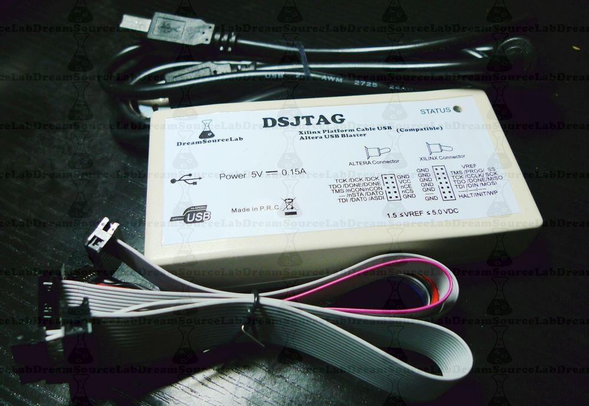
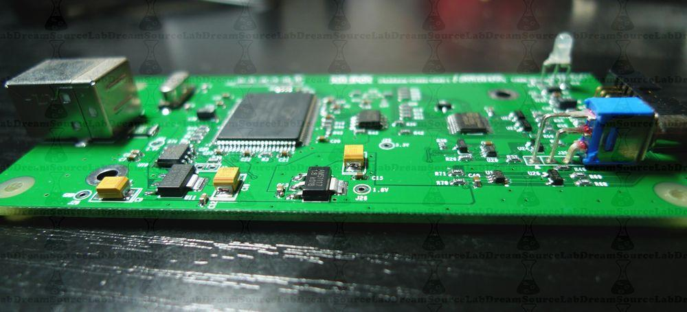

DSJTAG is a 2in1 USB JTAG cable for Xilinx or Altera FPGA/CPLD.
The function of DSJTAG can be toggled by a switch.
When switch down, DSJTAG act as a Xilinx FPGA JTAG, and compatible with Xilinx Platform Cable USB I. (Support all devices and feature)
when switch up, DSJTAG act as a Altera FPGA JTAG, and compatible with Altera USB Blaster. (Support all devices and feature)
DSJTAG will become your friend when you work with FPGA.
DSJTAG will let you never worry about which FPGA should be selected.
You can use DSJTAG with ISE or Quartus, whatever you want.

Function1: Xilinx Platform USB Cable I
1. Compatible with Xilinx Platform USB Cable I, support iMPACT/ISE/Chipscope/EDK
2. The firmware can be updated by iMPACT, and upgraded to the new version
3. Atuo detect and adapt the voltage of the target board
4. Support all the xilinx device, include FPGA/CPLD with 5V, 3.3V, 2.5V, 1.8V and 1.5V interface voltage level
5. Support hot-plug at both USB and target side, high impedance when power lose to avoid to damage your target board
6. Tri-color status LED
7. Support programming of SPI FLASH
Function2: Altera USB Blaster
1. Compatible with Altera USB Blaster, support Quartus II/SignalTap II
2. Support all the altera device, include Cyclone III and Stratix II, .etc
3. Support AS/PS/JTAG mode
4. Support communication with Nios II and in-systme debug
5. Bi-color status LED
The warnings and wrong operations possible cause dangerous.

May include key specification and other specifications.
1. Install Latest IMPACT Software
2. Toggle the switch down, and connect The DSJTAG To The USB Port Of The PC.
3. Open DOS Window And Set The Following Environment Variable To True By Typing The Command On The DOS Prompt:
SET XIL_IMPACT_ENV_USB2_FORCE_CPLD_UPDATE=TRUE
4. Type, IMPACT On DOS Prompts To Invoke IMPACT Software.
5. When IMPACT Will Open Please Cancel The Project Load Windows And Double Click On The “Boundary Scan” Icon In Flow Window.
6. Select The Source Of The "Platform Cable USB" Cable By Selecting Menu -> “Output” -> Cable Setup -> -> Communication Mode -> Xilinx USB Cable -> And Press OK.
7. IMPACT Software Will Show You The Warning Message “WARNING: IMPACT - Platform Cable USB Firmware Must Be Updated. This Operation May Take Up To 10 Seconds. Please Do Not Stop The Process Or Disconnect The Cable Prior To Completion. The Cable STATUS LED Will Be RED For The Duration Of The Update Process.” Press OK And Wait For The Update To Be Completed.
8. Once The Update Completed, Please “Exit” IMPACT
9. Go To DOS Prompt Windows Which Is Already Open And SET The Environment Variable To False: SET XIL_IMPACT_ENV_USB2_FORCE_CPLD_UPDATE=FALSE
10. Exit The DOS Window By Typing Exit On The Dos Prompt (This Is Very Important).
11. That’s It !! The USB Firmware Is Updated.
| J3 | JUMP |
| J13 | CONN2X7 |
| J30 | CONN1X6 |
| J35 | SPDT |
| Q1,Q2 | 2N7002/SOT |
| RN1 | 33 |
| R2 | 100K |
| R3,R4,R5,R6,R7,R8,R9,R10,R14,R16,R19,R20,R21,R22, R23,R24,R26,R27,R29,R30, R31,R35,R36,R37,R39,R41, R42,R45,R46,R47,R48,R50, R51,R72,R73 | 10K |
| R17,R62,R67,R70,R71 | 1K |
| R18 | 2K |
| R28,R33,R34,R58,R59,R64,R68,R69 | 33 |
| R38,R74 | 0 |
| R40 | 18 |
| R43,R44 | 30K |
| U1 | CY7C68013A-100AXC |
| U2 | XC2C256-7VQ100C |
| U10 | 24LC128-I/SN |
| U11 | LM1117-3.3 |
| U12 | LM1117-1.8 |
| U13 | SN74LVC2G07DCK |
| U15 | LM393D |
| U18 | DS2411R |
| U22,U23,U24,U26 | BAT54A |
| U29 | SN74LVC1G126 |
| U35 | SRV05-4 |
| U36 | 74LVC244APW |
| Y1 | 24 MHz |
| |
Please list your question here:
If you have questions or other better design ideas, you can go to our forum or wish to discuss.
Bug Tracker is the place you can publish any bugs you think you might have found during use. Please write down what you have to say, your answers will help us improve our products.
The Additional Idea is the place to write your project ideas about this product, or other usages you've found. Or you can write them on Projects page.
Click here to buy:
Other related products and resources.
This documentation is licensed under the Creative Commons Attribution-ShareAlike License 3.0 Source code and libraries are licensed under GPL/LGPL, see source code files for details.
Links to external webpages which provide more application ideas, documents/datasheet or software libraries
Copyright (c) 2008-2016 Seeed Development Limited (www.seeedstudio.com / www.seeed.cc)